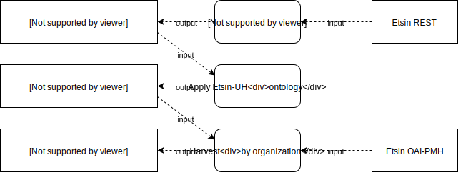
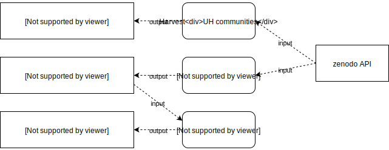
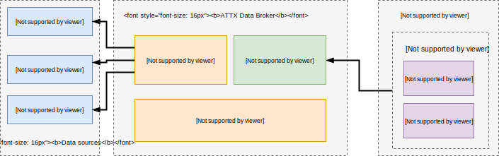

DRAFT - work in progress
Mildred use case
The goal of the use case is to create a dataset that provides an aggregated view to the research data output of the University of Helsinki. This new dataset and accompanied data API are then used as the backend service for university's Think Open site. Think Open brings together and promotes openness-related activities, such as open research data, open source code and publications, within the University of Helsinki.
Use case is part of the Mildred project, which aims to update the research data infrastructure provided by the University of Helsinki. Mildred consists of five subprojects that concentrate on different phases of the research process. ATTX co-operates with the subproject which is responsible for building and data publishing and metadata services.
Table of Contents
Approach
Dataset related metadata is still relatively sparse, compared to other research outputs, such as publications. In this use case we are concentrating solely on data sources that were chosen by the project Mildred's steering group.
One of the main ideas behind the use case, is the added value that ATTX broker deliver by running customizable validation and data quality processes over the harvested data. This additional data can also be published and used by the Think Open site to deliver custom quality metrics alongside the dataset metadata.
Etsin is already a service that aggregates dataset metadata from different sources, so why make another similar dataset? Mildred use case is interested specifically in UH's research outputs whereas Etsin is a national service. By creating an UH specific dataset, we have control over both the content and structure of the dataset, which makes it easier to integrate it with Think Open work or any other UH specific use. It is also possible that some day the data might flow in an opposite direction between UH's dataset and Etsin.
When it comes to identifying which datasets are somehow related to the University of Helsinki, we will start with the simple methods that should have good precision but might not have acceptable recall, in order to get some data. It is however possible to extend to those methods with more complex internal processing.
Use case is also featured as part of the OpenScienceFair 2017 in the poster session. (poster proposal)
User stories
Data sources
Etsin
Etsin is a national research dataset registry that contains both manually inputted and harvested metadata. Based on CKAN.
APIs
- Documentation: http://openscience.fi/etsin-api
- Data model: http://openscience.fi/etsin-data-model
- CKAN documentation: http://docs.ckan.org/en/ckan-2.7.0/api/#get-able-api-functions
REST
https://etsin.avointiede.fi/api/3
OAI-PMH
https://etsin.avointiede.fi/oai?verb=Identify
Usage
Every record in Etsin has an owner_org property, which connects it to the owning organization. Organizations (https://etsin.avointiede.fi/api/3/action/organization_list) form a hierarchy (https://etsin.avointiede.fi/organization).
TODO: Is it possible to utilize the organizational hierarchy with the search API?
Request https://etsin.avointiede.fi/api/3/action/package_search?&q=owner_org:01901 only return 10 hits that are explicitly connected with UH and not the 7000+ other records that are owned by UH related organizational units.
Getting all the UH related datasets using REST API can be implemented by first constructing a list/graph of UH and related organizations and then querying all of them. More detailed information about an organization can be found from /organization_show endpoint. For example: https://etsin.avointiede.fi/api/3/action/organization_show?id=35367e6f-6cd3-40e4-b2fe-aa391d34eeef, where value of the id parameter can be either name or id of the organization. "groups" property of the returned document contains information about the parent groups, which can be used to create a graph that represents the organizational hierarchy. After harvesting the child->parent relationships, inverse links can be added using simple ontology processing.
When using OAI-PMH interface, owner organization is only references in the header part of the record. For example: https://etsin.avointiede.fi/oai?verb=GetRecord&identifier=urn:nbn:fi:csc-kata20170611202023598902&metadataPrefix=oai_dc
Game plan 1
- Harvest all organizational data and create org_unit -> parent_org_unit relationships ()
- Use ontology to infer inverse relationships
- Create a dataset of UH related Etsin organizations / Query for all UH related organizations.
- Use harvesting API to get the updated records for every UH organization
Datasets and pipelines

RML Mappings
Etsin organizations to internal model.
@prefix rr: <http://www.w3.org/ns/r2rml#>.
@prefix rml: <http://semweb.mmlab.be/ns/rml#>.
@prefix ql: <http://semweb.mmlab.be/ns/ql#>.
@prefix ex: <http://example.com/ns#>.
@prefix xsd: <http://www.w3.org/2001/XMLSchema#>.
@prefix rdfs: <http://www.w3.org/2000/01/rdf-schema#>.
@prefix attx: <http://data.hulib.helsinki.fi/attx/> .
@prefix attx-work: <http://data.hulib.helsinki.fi/attx/work#> .
@prefix dct: <http://purl.org/dc/terms/> .
@prefix etsin: <http://etsin.avointiede.fi/> .
<etsin:orgs>
rml:logicalSource [
rml:source "https://etsin.avointiede.fi/api/3/action/organization_list?include_groups=True&all_fields=true&limit=10" ;
rml:referenceFormulation ql:JSONPath ;
rml:iterator "$.result[*]"
];
rr:subjectMap [
rr:template "etsin-org:{name}" ;
rr:class attx-work:Organization ;
];
rr:predicateObjectMap [
rr:predicate dct:title;
rr:objectMap [
rml:reference "title"
]
];
rr:predicateObjectMap [
rr:predicate dct:description;
rr:objectMap [
rml:reference "description"
]
];
rr:predicateObjectMap [
rr:predicate dct:identifier;
rr:objectMap [
rml:reference "id" ;
]
];
rr:predicateObjectMap [
rr:predicate attx-work:setName;
rr:objectMap [
rml:reference "name" ;
]
];
rr:predicateObjectMap [
rr:predicate attx-work:parentOrg;
rr:objectMap [
rr:template "etsin-org:{groups[*].name}" ;
]
];
.
Result sample
<etsin-org:02469-1054-karelia-1054-rehtorin-toimisto> a <http://data.hulib.helsinki.fi/attx/work#Organization> ;
<http://purl.org/dc/terms/title> "1054 Rehtorin toimisto" ;
<http://purl.org/dc/terms/identifier> "02469-1054" ;
<http://data.hulib.helsinki.fi/attx/work#parentOrg> <etsin-org:02469-karelia> ;
<http://data.hulib.helsinki.fi/attx/work#name> "02469-1054-karelia-1054-rehtorin-toimisto" .
Harvesting interface
Source data with oai_dc metadata prefix.
@prefix rr: <http://www.w3.org/ns/r2rml#>.
@prefix rml: <http://semweb.mmlab.be/ns/rml#>.
@prefix ql: <http://semweb.mmlab.be/ns/ql#>.
@prefix ex: <http://example.com/ns#>.
@prefix xsd: <http://www.w3.org/2001/XMLSchema#>.
@prefix rdfs: <http://www.w3.org/2000/01/rdf-schema#>.
@prefix attx: <http://data.hulib.helsinki.fi/attx/> .
@prefix attx-work: <http://data.hulib.helsinki.fi/attx/work#> .
@prefix dct: <http://purl.org/dc/terms/> .
@prefix etsin: <http://etsin.avointiede.fi/> .
@prefix etsin-ds: <http://etsin.avointiede.fi/dataset/> .
@prefix oai: <http://www.openarchives.org/OAI/2.0/> .
<etsin:datasets>
rml:logicalSource [
rml:source "https://etsin.avointiede.fi/oai?verb=ListRecords&set=01901-helsingin-yliopisto&metadataPrefix=oai_dc" ;
rml:referenceFormulation ql:XPath ;
rml:iterator "/*[local-name()='OAI-PMH']/*[local-name()='ListRecords']/*[local-name()='record']"
];
rr:subjectMap [
rr:template "http://urn.fi/{*[local-name()='header']/*[local-name()='identifier']}" ;
rr:class attx-work:Dataset ;
];
rr:predicateObjectMap [
rr:predicate dct:title;
rr:objectMap [
rml:reference "*[local-name()='metadata']/*[local-name()='dc']/*[local-name()='title']"
]
];
rr:predicateObjectMap [
rr:predicate attx-work:owner;
rr:objectMap [
rr:template "etsin-org:{*[local-name()='header']/*[local-name()='setSpec']}"
]
];
.
Results
<http://urn.fi/urn%3Anbn%3Afi%3Acsc-kata20161121150636648833> a <http://data.hulib.helsinki.fi/attx/work#Dataset> ;
<http://purl.org/dc/terms/title> "DMPTuuli user survey raw data 2016" ;
<http://data.hulib.helsinki.fi/attx/work#owner> <etsin-org:01901-helsingin-yliopisto> .
B2Share
B2Share is part of the EUDAT collaborative data infrastructure.
In B2Share the data is organized around communities, all of which maintain their own metadata schemas for community related records. This means that harvested data structures can vary depending on which community the record belongs to. There is also a common schema that is shared with all the communities.
Based on Invenio
APIs
Documentation
Elastic based data structure. B2Share also has OAI-PMH interface, but it seems that it has not been exposed yet.
Usage
There is no UH community, although Aalto has one, but UH related dataset are distributed amongst the research infrastructure and field specific communities. Affiliation related information is in the publisher and description fields.
Communities:
https://b2share.eudat.eu/api/communities/
Records by community:
https://b2share.eudat.eu/api/records/?q=community:867c4e67-9227-4b6f-8595-c97d37e9de61
Zenodo
Zenodo is a general purpose repository for all kinds of research outputs ranging from presentations to datasets. Users can create communities to organize content into subrepositories.
Based on Invenio
API
Documentation: http://developers.zenodo.org/
REST (beta - no full documentation yet 08-2017)
Zenodo REST API most likely uses Elastic as their implementations, because the output format is identical to one returned by Elastic's aggregation queries.
OAI-PMH
Output formats
- DataCite
- DataCite3.
Both have OAI specific variants available, which encapsulate the same record content with OAI elements. These representations include fields such as
http://developers.zenodo.org/#metadata-formats
Usage
Affiliations can be used to identify creators that are from UH. However, there are different variations:
<creator>
<creatorName>X, Y</creatorName>
<affiliation>Helsinki University Library</affiliation>
</creator>
<creator>
<creatorName>X, Y, Helsinki University Library</creatorName>
</creator>
<creator>
<creatorName>Helsinki University Library</creatorName>
</creator>
Output from OAI-PMH interface does not include links to the file metadata (links.bucket). OAI-PMH also has license information in URI format.
"license": {
"id": "CC-BY-4.0"
}
compared to
<rightsList>
<rights rightsURI="https://creativecommons.org/licenses/by/4.0/" >Creative Commons Attribution 4.0</rights>
<rights rightsURI="info:eu-repo/semantics/openAccess" >Open Access</rights>
</rightsList>
Harvesting is available using OAI-PMH protocol. Harvesting can be targeted using sets that correspond to communities. For example https://zenodo.org/oai2d?verb=ListRecords&set=user-hulib&metadataPrefix=oai_dc would return records published by the University of Helsinki library.
TODO: What are the other UH related Zenodo communities?
We can create another dataset that links communities to UH and use that to make the first broad classification of records.
Game plan
Since UH related data is distributed amongst different communities (i.e. there is no "UH" community), we can't limit our harvesting to any subset of communities, but we have go through all of them. We can either use the REST api to filter records via queries (e.g. publisher contains "helsinki") or first harvest all the records via OAI-PMH and do the filtering using internal processing. The best approach might be to use both.
- Identify communities, which are directly related to UH, and harvest their data using OAI-PMH interface. -> zenodo-uh-communities-ds
- Query all the other communities for potentially UH related data -> zenodo-uh-base-ds
- Process zenodo-uh-related-ds internally to filter actually UH related data -> zenodo-uh-filtered-ds
Datasets and pipelines

RML Mappings
Community's datasets via OAI-PMH:
<etsin:datasets>
rml:logicalSource [
rml:source "https://zenodo.org/oai2d?verb=ListRecords&metadataPrefix=oai_datacite&set=user-hulib" ;
rml:referenceFormulation ql:XPath ;
rml:iterator "/*[local-name()='OAI-PMH']/*[local-name()='ListRecords']/*[local-name()='record']/*[local-name()='metadata']/*[local-name()='oai_datacite']"
];
rr:subjectMap [
rr:template "http://doi.org/{*[local-name()='payload']/*[local-name()='resource']/*[local-name()='identifier']}" ;
rr:class attx-work:Dataset ;
];
rr:predicateObjectMap [
rr:predicate dct:title;
rr:objectMap [
rml:reference "*[local-name()='payload']/*[local-name()='resource']/*[local-name()='titles']/*[local-name()='title']"
]
];
.
Result:
<http://doi.org/10.5281%2Fzenodo.10857> a <http://data.hulib.helsinki.fi/attx/work#Dataset> ;
<http://purl.org/dc/terms/title> "Research Goes On: Post-Observatory Astronomy Resources In Helsinki" .
Simple search through REST API:
@prefix rr: <http://www.w3.org/ns/r2rml#>.
@prefix rml: <http://semweb.mmlab.be/ns/rml#>.
@prefix ql: <http://semweb.mmlab.be/ns/ql#>.
@prefix ex: <http://example.com/ns#>.
@prefix xsd: <http://www.w3.org/2001/XMLSchema#>.
@prefix rdfs: <http://www.w3.org/2000/01/rdf-schema#>.
@prefix attx: <http://data.hulib.helsinki.fi/attx/> .
@prefix attx-work: <http://data.hulib.helsinki.fi/attx/work#> .
@prefix dct: <http://purl.org/dc/terms/> .
@prefix etsin: <http://etsin.avointiede.fi/> .
<etsin:orgs>
rml:logicalSource [
rml:source "https://zenodo.org/api/records/?q=helsinki" ;
rml:referenceFormulation ql:JSONPath ;
rml:iterator "$.hits.hits[*]"
];
rr:subjectMap [
rr:template "http://doi.org/{doi}" ;
rr:class attx-work:Dataset ;
];
rr:predicateObjectMap [
rr:predicate dct:title;
rr:objectMap [
rml:reference "metadata.title"
]
];
rr:predicateObjectMap [
rr:predicate dct:description;
rr:objectMap [
rml:reference "metadata.description"
]
];
rr:predicateObjectMap [
rr:predicate dct:identifier;
rr:objectMap [
rml:reference "id" ;
]
];
rr:predicateObjectMap [
rr:predicate attx-work:setName;
rr:objectMap [
rml:reference "communities[*].id" ;
]
];
rr:predicateObjectMap [
rr:predicate attx-work:isSupplementTo;
rr:objectMap [
rr:template "http://doi.org/{metadata.related_identifiers[?(@.relation=='isSupplementTo')].identifier}" ;
]
];
.
Results:
<http://doi.org/10.5281%2Fzenodo.30823> a <http://data.hulib.helsinki.fi/attx/work#Dataset> ;
<http://purl.org/dc/terms/title> "Information Practices of Clinical Researchers - New Services in New Time" ;
<http://purl.org/dc/terms/identifier> "30823" ;
<http://data.hulib.helsinki.fi/attx/work#setName> "hulib" ;
<http://purl.org/dc/terms/description> "test" .
<http://doi.org/10.3897%2Fnatureconservation.8.6369.suppl3> a <http://data.hulib.helsinki.fi/attx/work#Dataset> ;
<http://purl.org/dc/terms/title> "test title 2" ;
<http://purl.org/dc/terms/identifier> "855230" ;
<http://purl.org/dc/terms/description> "Figure S2: Explanation note: The studied sites in August 2003: a) Top b) Grove c) Middle d) North." ;
<http://data.hulib.helsinki.fi/attx/work#isSupplementTo> <http://doi.org/10.3897%2Fnatureconservation.8.6369> .
Finto
Finto or Finnish thesaurus and ontology service can be used to access up-to-date versions of maintained linked vocabularies, which can be used to describe datasets or linked to existing dataset description to provide linked data for complex queries and automatic inferencing of new data.
IOW
IOW is a service for creating and maintaining descriptions for interoperability. In the context of this use case, it means that IOW can be used as the data source for schemas that allow for automatic validation of incoming or outgoing broker data.
Implementation
Architectural overview:

Features:
- DataCite output format
- Custom output format if required
- Data validation based on JSON schemas
- Simple data quality analysis
- Identifying dataset related to UH
- Deduplication of dataset metadata available from multiple sources
Pipelines
TBD